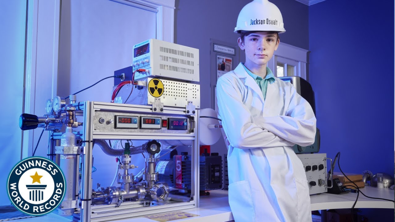
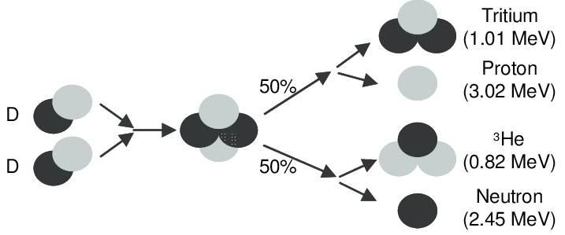
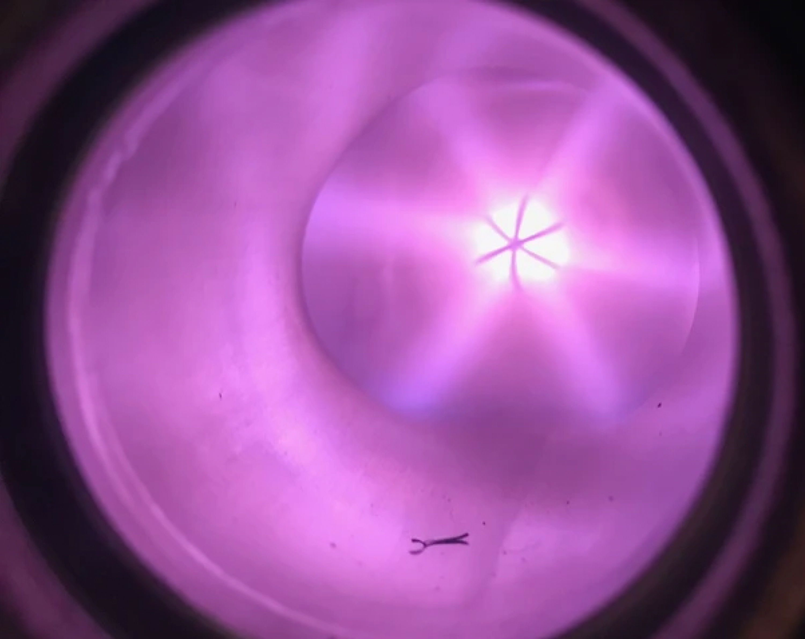

I Built a Nuclear Fusion Reactor at 12 Years Old
At 12 years old, I designed and built an inertial electrostatic confinement nuclear fusion reactor, successfully producing a verifiable fusion reaction at home.
The reactor works by generating an electric potential difference within a vacuum chamber. With a significant enough potential difference, atoms are hurled at each other with enough energy to overcome the coulomb force.
If deuterium is introduced to the chamber, a D-D fusion reaction can occur. 50% of these fusion reactions produce a neutron alongside a He-3 atom, and these neutrons are used to prove the reaction has occurred. I designed and calibrated my own system for thermalizing and detecting neutrons.
Despite its inability to provide sustainable electricity to the power grid, this style of reactor does serves numerous purposes in research and in the production of radioisotopes for medical use.
Skills:
- Project management
- Design
- Welding/soldering
- Basic circuitry
- High-vacuum system design
In addition to the more tangible skills listed above, this project gave me a lot of practice in producing scrappy solutions: often times I would buy something very cheaply on eBay, modify it to fit my needs, and then implement it into the reactor system.
Though this may be a cliche, the most important skill I learned was persevering through prolonged adversity and challenges. Weeks would often go by with no observable change in progress, and yet I was able to stick to my convictions and power through these dissuading times.
I also gained significant experience with presenting my work and public speaking, as I was invited to present to groups of academics and seasoned professionals in this space.

I also made numerous media appearances following the publicization of my project.
< Other work